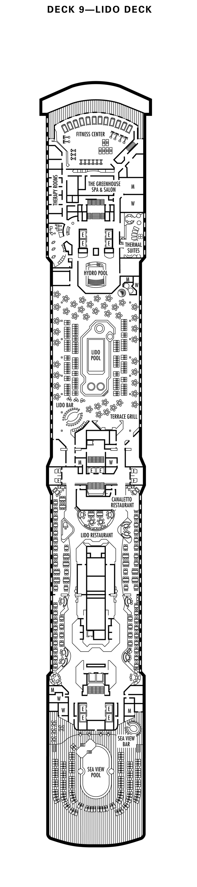

Cruisin'
Schedule
Map
Back
Official
Unofficial
loading...
Back
Westerdam Map
11 - Sports
10 - Observation
09 - Lido
08 - Navigation
07 - Rotterdam
06 - Upper Verandah
05 - Verandah
04 - Upper Promenade
03 - Promenade
02 - Lower Promenade
01 - Main Deck
